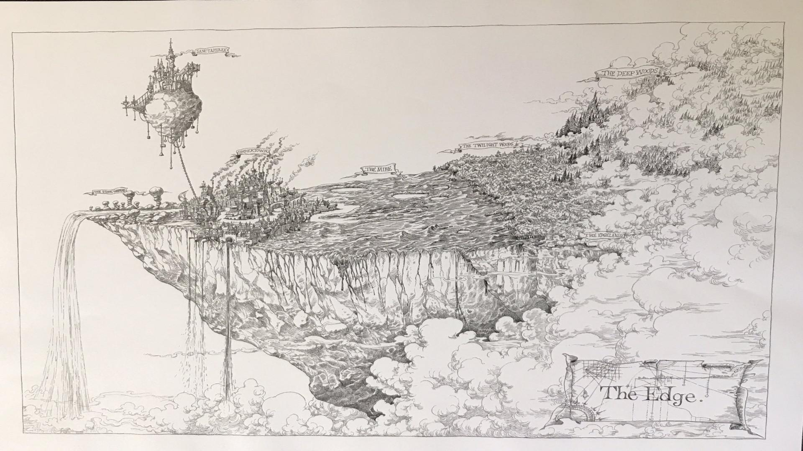
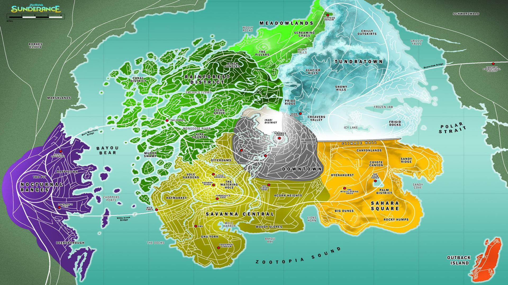
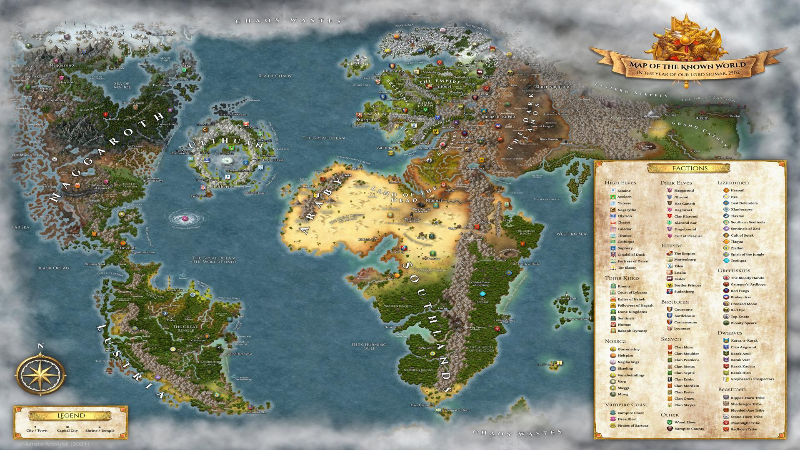
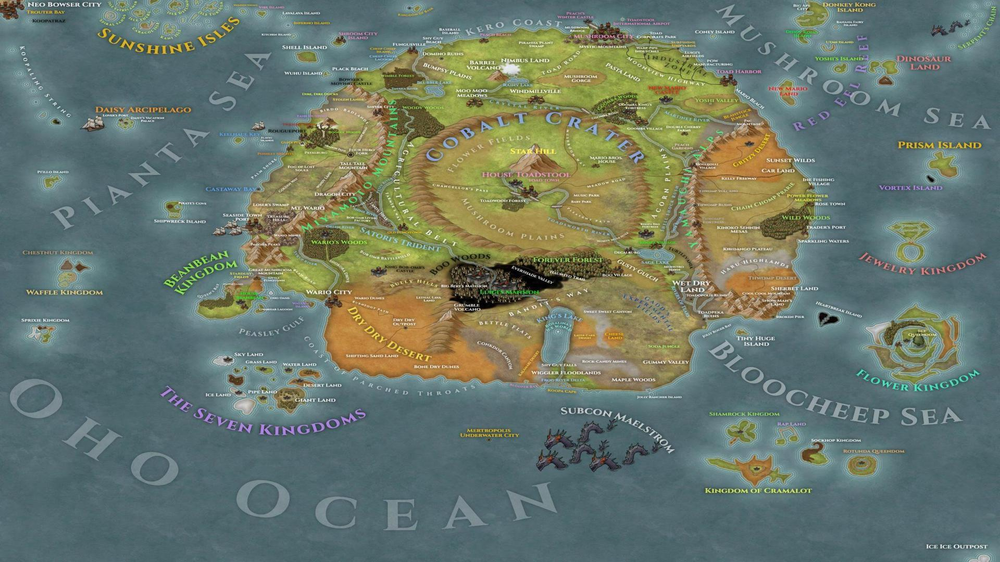
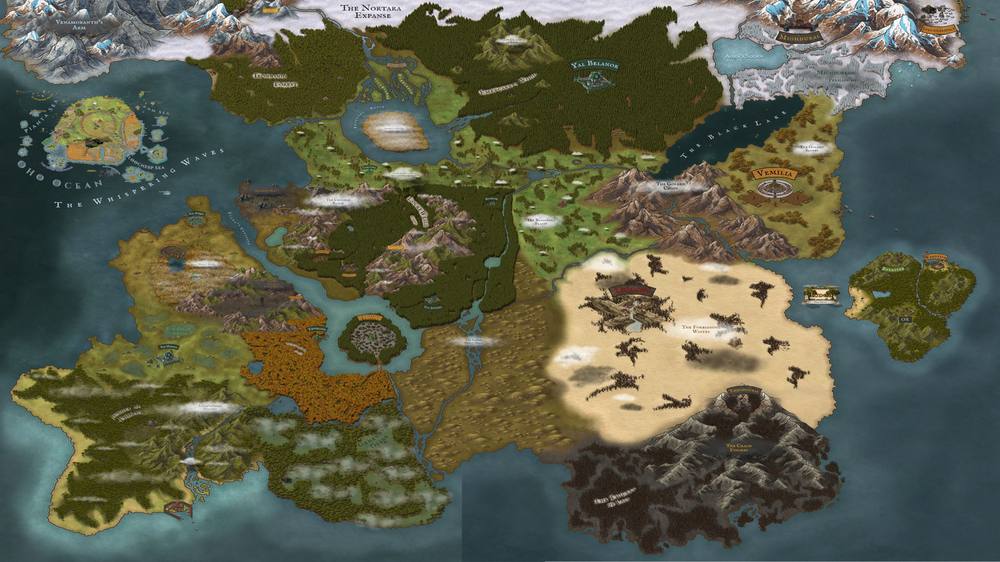
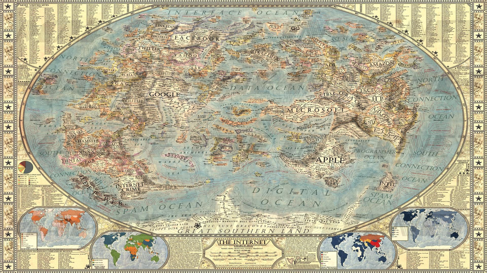
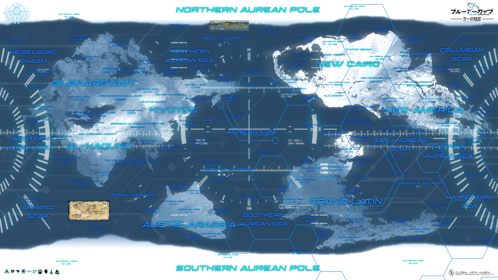
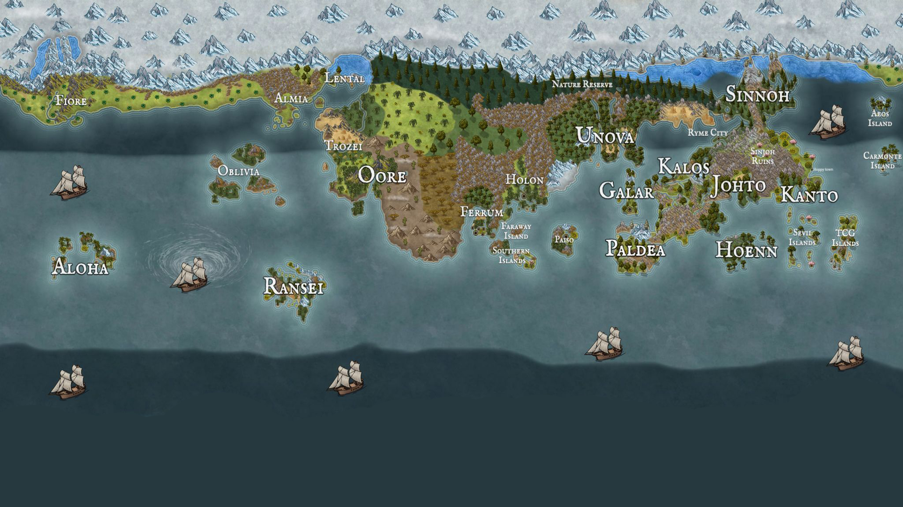
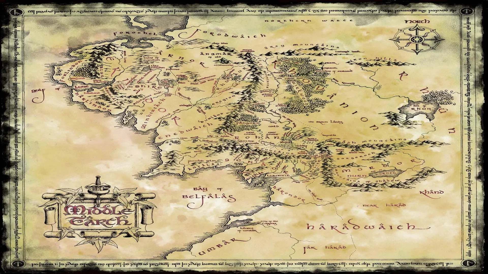

Select Tactical Region
Scroll through the available regions and select a map to view detailed tactical data.

Almost at the Edge
A decaying, liminal space at the conceptual boundary of the known map. Reality here is unstable, with the laws of physics becoming unreliable and spatial topography shifting without warning. This region acts as a navigational hazard and is considered the point of no return before total dissolution.

Animatopia
A civilization of advanced, anthropomorphic animals currently embroiled in a continent-wide conflict. Deep-seated societal tensions between predator and prey species have erupted into open warfare, creating a volatile and unpredictable battlespace with multiple, shifting frontlines. Allegiances are fragile and an understanding of species politics is critical.

Connectopia
A vast, uncolonized frontier ripe with opportunity and extreme danger. Intelligence suggests significant deposits of rare strategic resources, but the land is also home to uncontacted indigenous populations and fiercely territorial pioneer factions. Establishing a foothold here requires navigating a lawless, high-risk/high-reward environment.
Earth Land
Tactical analysis of the vast, uncharted continents situated beyond the circumpolar Antarctic ice wall. Officially designated a non-traversable barrier, this region is home to numerous un-contacted civilizations and a geopolitical landscape completely alien to our own. All operations in this sector are considered highly classified.
The Doughnut Hole
The empty space at the center of the world. A realm of non-euclidean geometry, cosmic absurdity, and the home of the Cosmic Jester.

The Fated Place
A grim world of perilous adventure, where mighty heroes battle the forces of Chaos and monstrous hordes threaten civilization.

Mushroom Kingdom & Adjacent Realms
View all maps related to the Mushroom Kingdom civil war and surrounding islands.

The Midlands
View maps of the fractured Midlands, including the conflict between the Onyx Hand and the Moonfang Pack.

The Internet
A digital realm of interconnected information, data tribes, and complex web-based governance.

Kivotos
A newly discovered Academy City to the west of Middle-earth, governed by a powerful student council and comprised of various feuding academies.

Pokémon Regions
An isolated land of powerful creatures and dedicated trainers, governed by the prestigious Pokémon League and threatened by ideological extremists.

Middle-earth
View the ancient kingdoms to the east of the Internet Federation, a land of tested alliances and fading magic.
Faerûn
Analysis of the Sword Coast and the wider continent of Faerûn. This region is plagued by cosmic threats, political instability, and the lingering influence of powerful, meddling deities. Monitor the aftermath of the recent large-scale Illithid invasion and the power vacuum left by the cult of the Absolute.
L'Eclaire Isle
An isolated, torus-shaped landmass inhabited by a sentient species of dough-based lifeforms. It is theorized that these beings are the progenitors of the non-euclidean properties of the adjacent Doughnut Hole. Their society is highly isolationist, and their metaphysical capabilities remain dangerously underestimated.
Teyvat
A continent divided into seven nations, each ruled by an Archon wielding absolute elemental power. The entire region operates under the silent, watchful gaze of the celestial realm, Celestia. The primary tactical threat is the pervasive and corrosive influence of the Abyss Order, a force seeking to overthrow the divine, established order.
Equestria
An isolated pony ethnostate governed by a strict, state-enforced ideology of absolute equality. Individual talents and unique abilities ("cutie marks") are systematically suppressed in the name of social harmony. The regime is highly centralized around a single, charismatic leader, making it stable but ideologically rigid and hostile to outside influence.

The Edge
The theoretical terminus point beyond the decaying boundary. Data is purely speculative, but suggests a total dissolution of reality into un-space, or a direct interface with the raw, chaotic code of existence itself. No successful probes have ever returned. Entry is forbidden under all protocols.